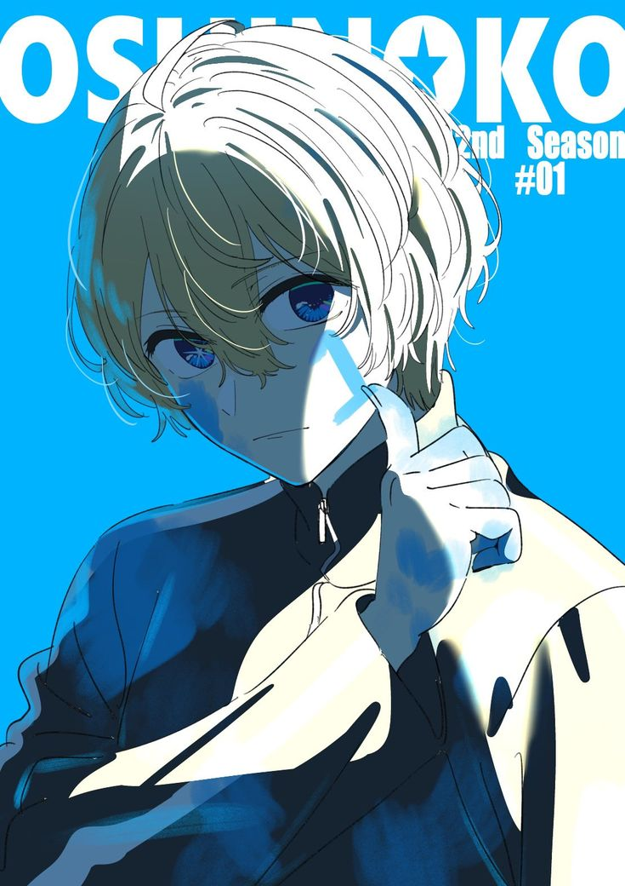

<!DOCTYPE html>
<html>
<!-- служебная часть -->

<head>
  <!-- заголовока Мари страницы -->
  <title>Хосино Аквн — преподаватель информатики</title>
  <!-- настраиваем служебную информацию для браузеров -->
  <meta charset="utf-8">
  <meta http-equiv="X-UA-Compatible" content="IE=edge">
  <meta name="viewport" content="width=device-width, initial-scale=1">
  <!-- загружаем Бутстрап -->
  <link rel="stylesheet" href="https://stackpath.bootstrapcdn.com/bootstrap/4.3.1/css/bootstrap.min.css"
    integrity="sha384-ggOyR0iXCbMQv3Xipma34MD+dH/1fQ784/j6cY/iJTQUOhcWr7x9JvoRxT2MZw1T" crossorigin="anonymous">
  <style type="text/css">
    body {
      font-family:Impact, Haettenschweiler, 'Arial Narrow Bold', sans-serif
   
    }


    
    img {
      max-width: 200%;
      max-height: 200%
      
    }
     
     
    
    h1 {
      font-size: 60px;
      margin-top: 40px;
      margin-bottom: 40px;
      color: #3a4a6d;
      
    }

    h2 {
      margin-top: 40px;
      margin-bottom: 20px;
      color: #737fc2;
    }

    p {
      font-size: 28px;
      color: #a0aeda; 
      border-radius: 0 10px 20px;  
    }
  </style>
</head>


</body>
</html>
  <div class="container">
    <div class="row">
      <div class="col-12">
        <h1>Хосино Аква Марин</h1>
      </div>
    </div>
  </div>
  <div class="container">
    <div class="row">
      <div class="col-12 col-sm-12 col-md-6 col-lg-6 col-xl-6">
        <h1 style="border: 2px solid DodgerBlue;"></h1>
        
        <body>
        <p>Аква Хосино — главный герой серии манги Oshi no Ko. В своей предыдущей жизни он был известен как Горо Амамия, врач, который был убит преследователем одного из своих пациентов, Ай Хосино, и перевоплотился в ребёнка последнего. 

          До трагедии, обрушившейся на его семью, Аква считался относительно нормальным человеком, если не считать его беспрецедентного актёрского таланта ещё в детстве, а также сообразительности и интеллекта. 4 После трагедии он изменился и стал холодным, расчётливым, хитрым и сдержанным, готовым пойти на любые средства, необходимые для достижения своей цели — найти отца. 1
          
          Аква — талантливый и амбициозный идол, известный своей потрясающей внешностью и исключительными способностями к пению и танцам. Она полна решимости добиться успеха в индустрии развлечений и не остановится ни перед чем, чтобы осуществить свои мечты. 
          <p style="border: 2px solid DodgerBlue;"></p>
          </p>
        </body>
      </div>
      <div class="col-12 col-sm-12 col-md-6 col-lg-6 col-xl-6">
        
    </div>
  </div>
  <div class="container">
    <div class="row">
      <div class="col-12">
        <h2>Мои научные работы</h2>
      </div>
    </div>
  </div>
  <div class="container">
    <div class="row">
      <div class="col-12 col-sm-12 col-md-6 col-lg-3 col-xl-3">
        <p><a href="Ссылка на статью">Заголовок статьи</a></p>
        <p><a href="http://thecode.local/electrician/">Хитрый электрик</a></p>
      </div>
    </div>
  </div>
  <div class="container">
    <div class="row">
      <div class="col-12">
        <h2>Контакты для связи</h2>
      </div>
    </div>
  </div>
  <div class="container">
    <div class="row">
      <div class="col-12">
        <p>Телефон: +7 (000) 000-00-00</p>
        <p>Почта: <a href="mailto: examples@gmail.com">examples@gmail.com</a></p>
        <p>Скайп: examples</p>
        <p>Телеграм: @examples</p>
      </div>
    </div>
  </div>
</body>
<!-- конец всей страницы -->

</html>